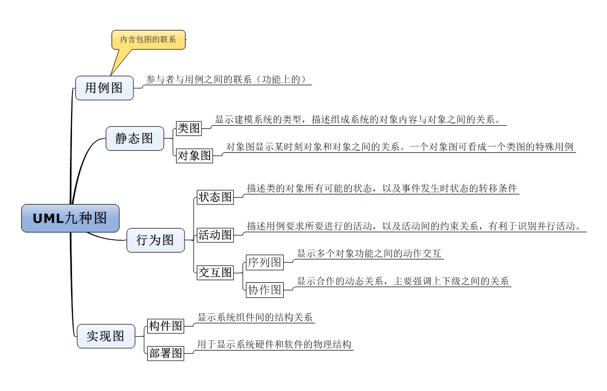
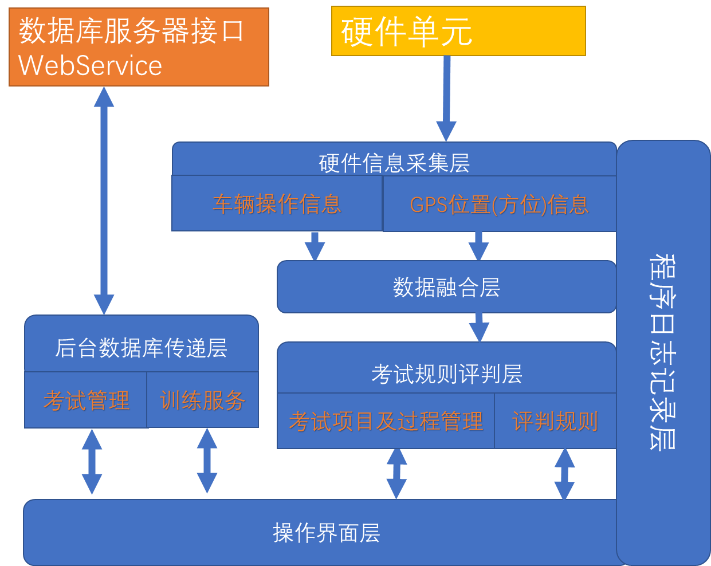

最近听了几位《软件工程》课程的老师授课，课后与老师基本都进行了简短的交谈，有个共同的观点就是这门课比较空洞，老师不是照本宣科就是泛泛而谈一些空洞的概念，而学生基本是在玩手机或考研的同学在复习别的功课，很多学生课本都没带。“软件工程”专业在我国开设了很多年了，多数本科院校计算机软件工程专业主要是培养学生完成“信息管理系统”开发过程为主线开展相关课程的教学，对于《软件工程》偏重管理的课程重视不够。课后我查阅了关于《软件工程》的教材与学习资料，国内不下100种之多，书中涉及内容非常繁杂，让人目不暇接。
作为在小公司从事计算机相关软硬件产品研发多年的老人，我讲的最多的一句话“如果完全按照软件工程规范进行软件产品设计与管理，多数小型软件企业会很快倒闭；作为从业人员，在软件产品研发过程中如果一点不遵从软件工程规范，那么你的产品不会走的特别远或成熟度稳定性可扩展性一定不强”。那么《软件工程》课程如何教学和组织学生学习才能避免目前课程空洞的弊病，让学生真正学习到以后从事软件开发过程中需要的必要技能和管理方法呢？本篇文章结合自己的一些体会谈谈几点感想，以期望对学校老师有所帮助。
如果你作为计算机专业的学生一定学习过多种开发语言，如C++、java或python，也一定完成过多个程序设计，通过编写具有一定功能的程序解决过一些实际问题。从软件工程角度看你所编写的程序不一定是严格意义上的软件。软件和程序通俗的理解可以如下定义：
软件：是一系列按照特定顺序组织的计算机数据和指令的集合。（软件 = 程序 + 文档） 程序：是一组计算机能识别和执行的指令，运行于电子计算机上，满足人们某种需求的信息化工具。（程序 = 数据结构 + 算法）
从以上定义理解程序设计与软件开发就很容易区分出两者之间的不同：
程序设计是指采用某种计算机编程语言编写能够解决一定问题的计算机程序。
软件开发一定是在任务驱动下有组织的完成有一定功能的软件程序设计以及文档制作。软件开发一定包含程序设计。
软件工程定义及其内涵：
软件工程到目前为止还没有统一的被学术界公司技术管理人员全部认可的定义，比较几个较为权威的定义如下：
BarryBoehm：运用现代科学技术知识来设计并构造计算机程序及为开发、运行和维护这些程序所必需的相关文件资料。
IEEE：在软件工程术语汇编中的定义：软件工程是：1.将系统化的、严格约束的、可量化的方法应用于软件的开发、运行和维护，即将工程化应用于软件；2.在1中所述方法的研究
FritzBauer：在NATO会议上给出的定义：建立并使用完善的工程化原则，以较经济的手段获得能在实际机器上有效运行的可靠软件的一系列方法。
《计算机科学技术百科全书》：软件工程是应用计算机科学、数学、逻辑学及管理科学等原理，开发软件的工程。软件工程借鉴传统工程的原则、方法，以提高质量、降低成本和改进算法。其中，计算机科学、数学用于构建模型与算法，工程科学用于制定规范、设计范型(paradigm)、评估成本及确定权衡，管理科学用于计划、资源、质量、成本等管理。
为此作者认为软件工程比较被各界认可的定义应该是：
软件工程是研究和应用如何以系统性的、规范化的、可定量的过程化方法去开发和维护软件，以及如何把经过时间考验而证明正确的管理技术和当前能够得到的最好的技术方法结合起来的管理方法学。
软件工程过程是指为获得软件产品，在软件工具的支持下由软件工程师完成的一系列软件工程活动，包括以下四个方面：
① P（Plan）计划活动——软件规格说明。规定软件的功能及其运行时的限制。
② D（DO）组织管理开发过程——软件开发。开发出满足规格说明的软件。
③ C（Check）测试与确认——软件确认。确认开发的软件能够满足用户的需求。
④ A（Action）版本控制与升级——软件演进。软件在运行过程中不断改进以满足客户新的需求。
从软件开发的观点看，它就是使用适当的资源（包括人员，软硬件资源，时间等），为开发软件进行的一组开发活动，在活动结束时输入（即用户的需求）转化为输出（最终符合用户需求的软件产品）。
软件工程对软件开发划分的三个阶段：
定义阶段：可行性研究初步项目计划、需求分析；
开发阶段：概要设计、详细设计、实现、测试；
运行和维护阶段：运行、维护、废弃；
软件工程组织软件开发活动所需遵循的几个基本原则：1、抽象；2、信息隐蔽；3、模块化；4、局部化；5、确定性；6，一致性；7、完备性；8、可验证性
软件工程专业：主要讲授及研究学习计算机各类软件的构造、设计、开发方法、测试、维护等相关的知识和技术，涉及程序设计语言、数据库、软件开发工具、系统平台、设计模式等多方面的理论知识、技术和方法的学科专业。涉及软件开发过程中的软件需求分析、软件设计、软件测试、软件维护等。
作者理解软件工程课程只是软件工程专业中的一门专业课程而并不是全部。作为本科软件工程专业学生需要更多的注重软件开发过程中需要基础理论知识、技术和程序设计方法的学习。软件工程应该属于管理学学科主要研究在软件开发过程中对开发人员、开发流程、程序代码的标准化管理，以提高开发效率，避免不必要浪费的管理学学科。
很多教科书会大谈特谈软件开发危机，举了很多规模性软件研发失败的教训，强调软件工程课程的重要性，认为开发软件如果不安软件功能的规则方法一定会失败。其实这是在误导学生，作者从事软件研发接近30多年，开发过多个软件产品，如基于HLA的DirectRTI、基于OpenGVS的simGVS等软件产品，设计研发过多种模拟训练器材、完成过驾驶人考试科目一、科目二、科目三等多种相关产品。经验告诉我在实际的软件开发过程中一定要对软件工程的理论进行取舍，否则你会陷入无穷无尽的软件工程陷阱，各种管理规定会束缚住研发人员的手脚，软件管理的各种事物会严重影响软件产品的进度和研发效率，是得不偿失的。
我们不妨对软件工程按照研发团队规模进行分类：
① 个体软件工程：在github、gitee、gitlab上有很多开源或闭源的软件个体研发人员。很多软件项目是软件个体的劳动成果，经过多年的产品跌到已经非常成熟，也为社会或其他需要人员提供了巨大帮助。对于个体软件程序员我们称为个体软件工程：这类程序员眼中的软件功能需求比较小，一般不注重软件开发过程中的管理工作，不会进行详细的需求分析、总体设计等繁杂的管理步骤，当然有经验的会写一些功能目标和测试文档。多数程序员会把软件开发过程中代码管理提交到github平台，以帮助开发过程中的程序版本控制和分支控制。
② 小组软件工程：开发团队小于5人，技术负责人基本是团队核心人员，开发项目目标明确且相关技术基本成熟的软件开发小组，我们认为适合小组软件工程。绝大多数软件公司构建的软件开发团队属于小组软件工程模式，即使比较大型的软件公司也是将规模较大的软件开发团队按任务分解为较小的软件开发小组，每个小组3~5人，小组长基本是核心开发人员也是技术负责人，其中一人作为测试人员并辅助小组长完成开发过程管理并撰写技术文档。这样的好处是小组软件开发相对完成的软件相对独立，技术和规模可控，版本迭代比较清晰，变更比较容易。
对于小组软件工程所关心的软件工程问题比较具体且可操作性较强，一般需要制定开发目标（需求分析报告相对任务较为明确）、总体设计技术路线比较清晰、软件技术架构比较成熟、测试文档较为规范或测试范围界限明确。多数软件团队基本不会采用复杂的软件工程管理软件工具组织管理，常制定常用的技术文档作为软件团队开发的依据：如需求分析报告、总体设计报告、单元和总体测试报告等。软件编码人员依据任务协同采用git服务器或SVN服务器定期提交软件代码作为协同依据。
③ 规模软件工程：对于软件研发团队较为庞大，一般是50人以上的软件开发团队，完成的软件系统较为复杂，如操作系统、Office应用软件、编译软件或集成开发环境、AutoCAD等。需要明确最终任务，具有严格的分工和软件产品质量控制。这样的软件团队开发过程管理一般会依据成熟可操作的软件工程管理模型如CMM或CMMI，借助软件工程管理软件进行任务划分和软件开发过程管理，这类软件开发模式是软件工程课程讲解的主要目标对象。
作者到目前为止没有在这样规模的软件企业任职过，从事的均是小规模的应用软件系统开发，所以本篇文章立足于小组软件开发为主进行描述。
无论软件工程概念的定义还是授课教材、授课老师都会同意我这个观点，只是如何将软件工程从空中楼阁实实在在的落实到地面，真正对软件研发生产起到实实在在的作用，是企业程序员、项目经理、工程管理人员、软件用户等所有相关人员需要解决的基本问题。
那么到底如何认识软件工程？如何学习软件工程才能实时在在对自己有所帮助呢？
作者认为可以从两个维度认识软件功能：
第一个维度：不同的角色对软件工程有不同的认识，不同的需求。我们可以把相关人员分解为如下角色：
①软件客户（企业老板或高级管理层）：这类人员其实不太关心软件开发过程的管理，他们关心的是开发预算、开发周期和软件产品所解决的问题。针对不同的软件产品、软件客户、研发团队的企业老板，在指定软件可行性报告或软件立项报告时一定要多留个心眼和考虑到功能变更、软件团队变更等风险因素，在研发周期、研发经费等实际问题上要有充分的余地，一般情况下需求分析报告会多次变更，如果是首次软件研发一般需要2次跌到才能够初步满足用户使用，还需要很长事件促进软件成熟。针对这类人群一般需要撰写《软件可行性分析报告》和《软件需求分析报告》，根据具体情况进行取舍。
② 项目经理（软件设计研发负责人）、技术经理（软件架构师或技术负责人）：我们把这两个角色放到一起，一般情况下他们会是一个人担任，他们关心的问题基本具有同质性，只是项目经理比一定是软件研发人员而技术经理绝大多数是软件团队的核心研发人员。这两类人员关心软件工程的内容比较丰富，也是保障软件产品质量、控制软件项目进度与迭代周期、软件产品可用性与可靠性的核心负责人。
对于这类人员一般需要完成《软件需求分析报告》、《软件总体设计报告》( 其中包含技术路线和架构设计)、《软件测试规格任务书》等技术文档。
③程序员：作为程序员其实不太关心软件工程的，多数是程序员基本是在根据总体设计报告中设计的编程规范如信息管理系统中数据库结构(数据字典)、软件架构形式、自身受领的任务进行软件代码的编写。涉及程序人员的软件功能基本是制定好的《软件总体报告》中包图、配置图、软件架构模式等内容,有的可能涉及《 软件详细设计报告》中的状态图、活动图、交互图等具体的规则内容。
④测试员（调试安装人员）：软件工程中测试一般分为单元测试和总体测试。单元测试多数公司均是有程序员在开发过程中完成。总体测试可以分为内部测试和外部测试( 试运行)。比较规范的软件公司会有一到两名测试人员，依据《软件测试规格任务书》分步骤的进行软件测试，一般分为功能测试和安全测试等内容。
第二维度：软件研发过程中需要软件工程管理步骤、方法、工具
①软件研发前：软件研发前一般需要立项，这就需要编写软件可行性分析报告，如果完成立项后作为公司管理层需要配置软件研发人员和对应管理机构，指定相关人员指定软件需求分析文档、软硬件实验性原型开发等工作。
②软件研发中：在 《 需求分析报告》完成评审后，软件产品的功能界定基本已经明确了，我还是建议要制定《软件总体设计方案》，通过有文字可查的《方案》文档界定多位程序员需要遵守的一些基本准则，如数据库数据字典规范了数据库表和数据库字段、数据库存储过程及参数的命名规范、软件实现的总体技术路线、软件前后端架构、软件配置软硬件环境等内容，特别是软件开发人员的分工界限和基本的时间要求等。当然作为软件项目经理或技术负责人对于比较复杂的软件系统可以要求开发人员在编码过程中完成类图、对象图、状态图、活动图、序列图、活动图，以方便小组针对某些功能进行小组讨论，为以后的人员变更做好必要的组织准备。
③软件研发后：软件产品研发完成后的测试是产品走向成熟的重要环境，单元测试贯穿到软件设计的整个过程，一般需要借助单元测试工具，如java语言的 JUnit 工具、C++语言的C++Test工具或由程序员通过编写测试代码完成单元测试。软件产品的集成测试还是很有必要的，集成测试建议一定有专门的测试人员完成，避免程序人员参与直接测试，《 软件测试规格任务书》需要软件经理、测试员、程序员共同指定，并在开发过程中逐步完善并且目标明确，可以将功能测试和安全测试分开，也可以一起进行，主要根据软件产品的重要性和公司管理实际情况确定。最后生成《软件测试报告》。软件交互用户试用还要提供《软件使用说明书》等文档。
④软件产品的迭代升级步骤：软件产品是一个螺旋式迭代开发过程，首次测试完成的软件一般还不能称为软件产品，根据我开发的经验一般需要二次迭代完成的软件才能提交用户试运行，在试运行过程中还需要不断的修改软件 bug和完善软件功能，适应不断变化的应用需求，真正相对成熟的软件产品一般需要10年以上的试运行周期。
软件版本号的确定：在软件开发过程和测试迭代过程中，一般需要制定软件版本号用于界定不同软件发布日期。软件版本号是指软件在不同开发阶段的标识符。它通常由多个数字组成，这些数字通过点号（“.”）分隔，代表软件的不同版本或更新。这些版本号有助于开发团队追踪软件的历史，更有助于用户了解软件的更新状态。
例如，在一个版本号“1.17.10”中：
1 表示主要版本（Major Version），通常用于标识重大变更或不兼容的更新。
17 表示次要版本（Minor Version），用于标识功能性改进或新增特性。
10 表示补丁版本（Patch Version），用于修复小问题或漏洞。
学习软件工程课程是为了日后工作中从事软件产品的管理工作（或辅助性管理工作），需要实实在在的掌握几项技能：
UML语言已经成为软件工程设计的标准化描述语言，涉及到软件研发前中后的各个阶段以及各种文档报告，所以学习软件功能课程首先需要掌握UML语言，能够应用UML园绘制各种软件的用例图、静态图、动态图、配置图。下面是UML语言描述的软件产品UML图的基本构成。

学习软件工程课程，需要实验性的学会撰写几个标准性文档：
《需求分析报告》、《总体设计报告》、《详细设计报告》、《软件测试任务书》、《软件测试报告》、《软件使用说明书》等。在学习过程中可以参阅国标或大企业的标准文档格式要求，以模拟项目形式完成部分文档的撰写，我想对你一定会有所帮助的。
软件研发过程中离不开代码管理和版本控制，所以就离不开软件版本控制工具。比较常用的软件代码版本管理工具有git和SVN工具。SVN工具属于集中管理的软件管理模式，作者长期使用公式内部配置的SVN服务器对公司产品进行代码管理和软件版本管理。
git属于分布式的软件管理模式工具，目前市场上基本常用git模式管理软件产品，你可以自己安装git服务器，亦可以借助免费的git空间进行软件产品的管理。比较知名的有www.github.com,国内有www.gitee.com
作为学生可以虚拟一个软件研发团队，申请git免费空间，协同完成软件代码的提交、变更、分支划分与合并、版本变更等基本的操作命令的练习。作者博客网站https://opengvs.github.io/opengvs就是托管在github.com服务器上的免费空间。
前面已经给出了软件工程的定义， 有软件工程的定义可以看出软件工程属于管理学科。在理解或讲授学习软件工程的时候需要界定软件工程的内涵与边界，将软件工程的管理组织活动与软件开发技术方法区分开来，避免认为软件开发过程中的所有行为均属于软件工程的研究内容，从而陷入庞大的无休止的软件工程学习陷阱。
结合作者的认识，下面具体谈一下几个软件开发技术与方法：(其实他们不应该是软件工程内涵范围)
① 面向过程的软件工程与面向过程软件开发是两个不同的概念描述
在《软件工程概论》中详细讲述了面向过程的软件工程在软件开发过程中所需进行的组织管理工作以及阶段目标，如软件开发前、开发过程、开发完成所进行的管理任务。其实 面向过程的软件工程是软件开发组织所构建软件系统的基本流程。
面向过程软件开发也称结构化开发，将软件要实现的功能分解成一个个连续的流程结点，将每个节点都实现为一个函数，依次调用这些函数以完成软件功能。至于执行流程中多个函数共用的数据，则拿出来定义为共享的数据结构，实例化，在函数中使用和传递。所以面向过程软件开发属于软件设计方法学中的问题，应该属于编程语言或程序设计结构中的问题，不要拿到软件工程课程的教学范畴。
② 面向对象软件工程只是软件工程实时过程中面向对象分析问题、组织设计程序的方法学问题，而不是软件工程的工作组织过程。
“面向对象软件工程”多是讲解如何设计类和对象以及他们之间的关系、对象与对象之间的数据耦合等内容，作者认为这是软件开发过程中的方法学问题。面向对象开发主要指模拟人类的思维方式，将软件需求中的事物关系，通过封装、继承、多态等手法抽象为一个个具体的对象（类），在对象中包含数据和操作数据的方法，以此方式实现软件需求分析、程序设计和软件测试。我们前面提到的UML语言对软件开发过程的描述就是通过统一定义的符号描述形象化的绘制面向对象方法在软件开发过程中的设计方法。
作者偏向于认为面向对象软件工程属于软件工程实施过程中分析问题解决问题方法学范畴，是学习软件工程课程中需要掌握的分析问题设计、解决方案、理清软件工作思路的重要技术技能。是软件工程课程的二级标题，不能成为软件工程的主干。
其实：面向过程的软件方法学模拟了数学函数的思想，而面向对象的程序设计模拟了人类认识世界事物分类的思维模式，对于非数学问题采用面向对象构建软件使得软件结构更加清晰。
③ 软件架构与程序架构 在软件开发过程中经常用到，作者认为其同样属于软件开发过程中设计方法学范畴。
软件架构在软件运行过程中起到十分重要的作用，决定了软件系统开发过程的分工合理性以及是否具有高效的运行效率。记得十多年前某地市在配置驾驶人科目一考试系统时，在Websphere集群服务器中修改关键表访问采用Redis二级缓存以及修改web服务访问的负债均衡，使得运行效率提高为原来的10多倍，解决了当时十分棘手的问题。
程序架构在软件开发过程中同样是衡量程序员功底的重要因素，往往决定大型软件能否顺利完成或决定最终软件是否具有较高的运行效率，具有可维护性和扩充的重要体现。如当前信息系统管理类软件采用java形式开发时后台服务器多采用 SSM架构、前端页面Vue框架的事件处理采用MVVM架构等，后台服务器如何设计Been层、DAO层、Service层、Control层是决定web服务器应用层的稳定性和可扩充性的重要因素。这种类型的应用程序架构网上文章比较多了，这里列举一个作者开发的驾驶人科目二考试系统车载应用程序的架构设计：

通过设计合理的程序架构使得应用程序可维护性、可扩充性得到了极大的提升，10多年来考试程序适应了多种硬件信号的变化，依据用户需求更换过多种数据库平台接口程序基础框架未进行大的修改。不同的软件在设计时会采用不同的架构模式，其基本思想就是分层开发，减少层与层之间的耦合，以便于软件开发过程的分工协作，方便软件功能的相对独立测试。
无论是软件运行架构还是程序设计架构作者认为这些属于程序设计的技术范畴，它们并不属于软件工程的研究范围，否则软件工程涵盖的内容就太大了，让人目不暇接。
④设计模式是程序代码组织形式，是实现程序架构设计的重要实现方法，同样不能称为软件工程的研究范围。记得OSG（OpenSceneGraph）中使用了10多种设计模式，实现了图形系统多种数据的管理与访问模式，如创造型模式---Factory(工厂)模式、AbstractFactory(抽象工厂)模式、Singleton(单例)模式、Builder(创造者)模式、Prototype(原型)模式、Bridge(桥接)模式、Adapter(适配器)模式、Decorator (装饰器)模式、Composite(组合)模式、Proxy(代理)模式、Template(模板)模式、Strategy (策略)模式、State(状态)模式、Observer(观察者)模式、Command(命令)模式、Visitor(访问者)模式、Interpreter(解释器)模式等。
作者认为设计模式属于软件开发过程中设计技巧，体现了程序设计人员的编程水平。但是设计模式不应该划分到软件工程的研究范畴。
总之程序架构与程序框架、设计模式、面向过程编程、面向对象分析与编程是软件工程在管理软件开发工程中经常用到离不开的软件设计技术，但是并不属于软件工程的研究范围，这样在教授和学习《软件工程》课程中就会清晰明了。
以上是作者对软件工程课程的几点粗浅感想，这样会不会对你学习软件工程有所帮助？